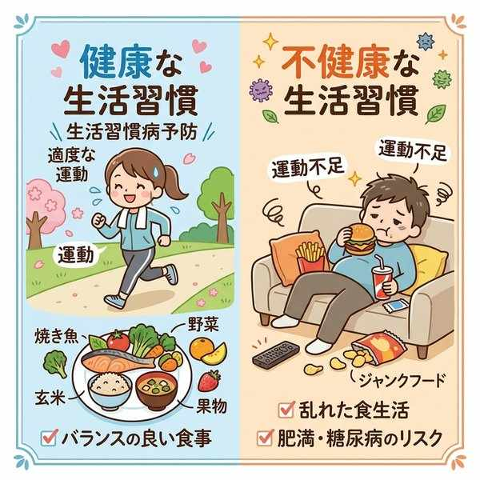
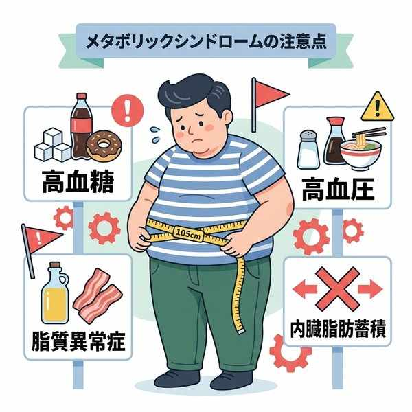
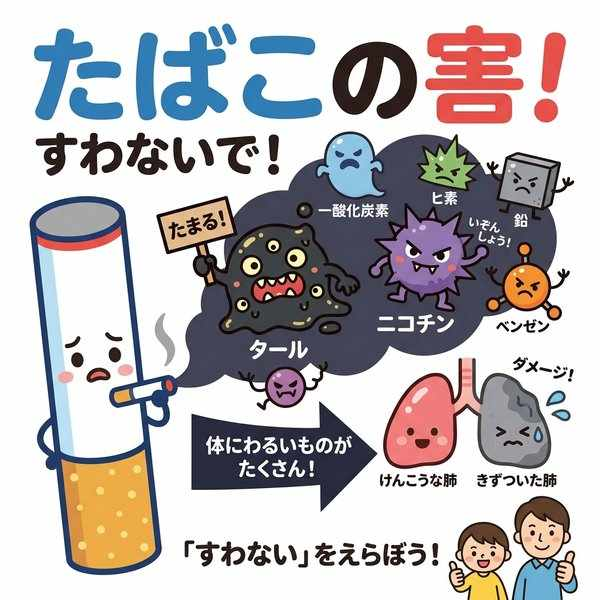
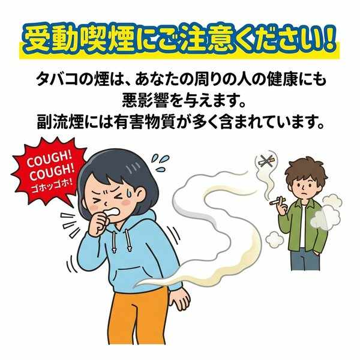
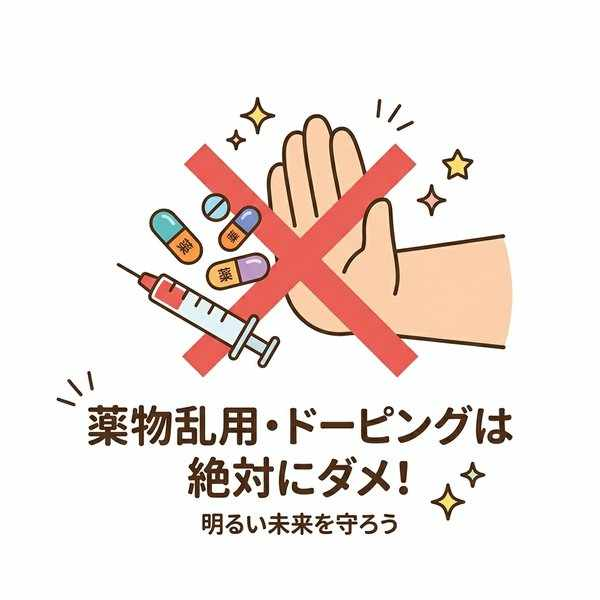

単元3: 生活習慣病の予防とがん
食事や運動、休養などの生活習慣は、病気の発症や進行に深く関わっています。この単元では、動脈硬化や糖尿病などの生活習慣病、がんの特徴、そして心身の発達を妨げ健康を害する喫煙・飲酒・薬物乱用の害について詳しく解説します。
1. 主な生活習慣病とその仕組み
日常の好ましくない生活習慣（運動不足、過食、塩分・脂肪のとりすぎなど）が原因で発症・進行する病気を生活習慣病（せいかつしゅうかんびょう）といいます。
| 生活習慣病名 | 病気の特徴と仕組み | 主な原因 |
|---|---|---|
| 動脈硬化 （どうみゃくこうか） |
血管の壁にコレステロールなどの脂肪がたまり、血管が硬くもろくなった状態。心臓病や脳卒中の引き金になります。 | 動物性脂肪のとりすぎ、運動不足、喫煙 |
| 高血圧 （こうけつあつ） |
動脈にかかる圧力が異常に高くなった状態。血管に負担をかけ続け、動脈硬化を促進します。 | 塩分（ナトリウム）のとりすぎ、ストレス、肥満 |
| 糖尿病 （とうにょうびょう） |
血液に含まれるブドウ糖の量（血糖値）が異常に多くなる病気。進行すると失明や腎不全などの合併症を引き起こします。 | エネルギー（糖分・脂質）のとりすぎ、運動不足 |
| 歯周病 （ししゅうびょう） |
歯垢（プラーク）の中の細菌が原因で歯肉が炎症を起こし、進行すると歯を支える骨が溶けてしまう病気。 | 歯磨きの不徹底 |
| 心臓病 / 脳卒中 | 心臓病（狭心症、心筋梗塞など）や、脳卒中（脳梗塞、脳出血など）は血管の障害から起こります。 | 偏った食事、運動不足、高血圧や動脈硬化の放置 |
※内臓脂肪型肥満（腹囲基準）に加えて、血圧・血糖・脂質（中性脂肪）のうち2つ以上が基準値を超えている状態をメタボリックシンドローム（内臓脂肪症候群）と呼び、特定健康診査（メタボ健診）で早期発見に努めています。

好ましくない習慣が引き起こす生活習慣病

メタボリックシンドロームの注意点
2. がん（悪性新生物）
がんは、正常な細胞の遺伝子が傷ついて変化し、無秩序に増殖して周囲の組織や器官の働きを壊す病気です。我が国の死亡原因の第1位となっています。
- がんの原因：主に生活習慣（喫煙、食生活、飲酒など）と、一部の細菌やウイルス（胃がんの原因となるピロリ菌、子宮頸がんの原因となるヒトパピローマウイルス、肝臓がんの原因となる肝炎ウイルスなど）が関与しています。
- がんの予防と検診：がんを早期に発見して適切な治療を行えば、回復させたり進行を防いだりすることが十分に可能です。そのため、定期的にがん検診を受診することが最も有効です。
3. 喫煙の害と有害物質
たばこの煙には数多くの化学物質が含まれており、なかでも特に有害とされる代表的な3大物質は以下の通りです。
- タール：粘り気のある黒褐色の液体。肺がんなどの原因となる発がん性物質を多く含んでいます。
- ニコチン：毛細血管を収縮させ血圧を上げます。非常に強い依存性（やめられなくなる性質）を持ちます。
- 一酸化炭素（CO）：血液中のヘモグロビンと酸素よりも強く結びつき、血液の酸素運搬能力を低下させ、慢性的な酸素不足をもたらします。
喫煙者が直接吸い込む煙を主流煙（しゅりゅうえん）、たばこの火のついた先から立ち上る煙を副流煙（ふくりゅうえん）といいます。実は副流煙のほうが有害物質が多く含まれています。他人が出す煙を吸わされることを受警喫煙（じゅどうきつえん）といい、非喫煙者の健康も害します。

たばこの煙に含まれる有害物質の害

周囲の人に影響を及ぼす受動喫煙
4. 飲酒の害と急性中毒
お酒に含まれる主成分はアルコール（エチルアルコール）です。アルコールは主に体内の肝臓（かんぞう）で分解されますが、過度の飲酒は体に深刻な影響を与えます。
- 急性アルコール中毒：短時間に大量のアルコールを摂取（イッキ飲みなど）することで、脳の機能が麻痺し、意識不明や呼吸停止に陥って死に至ることがある極めて危険な状態。
- アルコール依存症：長年飲酒を続けることで、自分の意志ではお酒をやめられなくなる精神的・身体的な病気。
※未成年者（20歳未満）の喫煙・飲酒が法律で禁止されているのは、発育期にあるため大人よりも健康への悪影響（脳や臓器の障害など）を受けやすいからです。
5. 薬物乱用とフラッシュバック
法律で禁止されている危険ドラッグや違法薬物を使用したり、医薬品（風邪薬や痛み止めなど）を本来の治療目的以外で使用（過剰摂取など）したりすることを薬物乱用（やくぶつらんよう）といいます。これはたとえ1回でも使用すれば乱用にあたります。
- 作用：乱用された薬物は、人間の脳（中枢神経）に直接作用して、強い依存性を生じさせるとともに、幻覚や妄想、けいれんを引き起こします。
- フラッシュバック（再燃現象）：薬物の使用をやめて普通の生活に戻った後でも、精神的ストレスや疲労、少量の飲酒などをきっかけに、突然幻覚や妄想などの症状が再び現れる現象。
- 対処法：薬物の誘惑を避けるためには、薬物を勧められやすい場所や人物に近づかない、きっぱりと断る強い意志を持つことが大切です。
- ドーピング：スポーツにおいて、競技力を高める目的で禁止されている医薬品を使用する不正行為。

脳や体に深刻な依存とダメージを与える薬物乱用
🔥 定期テスト対策・暗記のコツ
① 動脈硬化と高血圧の定義の違い
「血管が硬くもろくなる ➔ 動脈硬化」「動脈にかかる圧力が異常に高くなる ➔ 高血圧」。記述や選択肢でごちゃ混ぜにされやすいので、正確に覚えましょう。また、歯を支える骨が溶けるのは「歯周病」です。
② たばこの3大有害物質の役割
「がん（発がん性）➔ タール」「依存性・血管収縮 ➔ ニコチン」「酸素運搬の低下 ➔ 一酸化炭素」。この3つの組み合わせを問う問題は必ず出題されます。
③ 薬物乱用は「1回でもアウト」＆「フラッシュバック」
「1回だけなら乱用にならない」は×。1回でも違法に使用すれば乱用です。やめても突然幻覚が戻る現象は「フラッシュバック」で、これらは漢字・カタカナの穴埋めとして非常によく出ます。